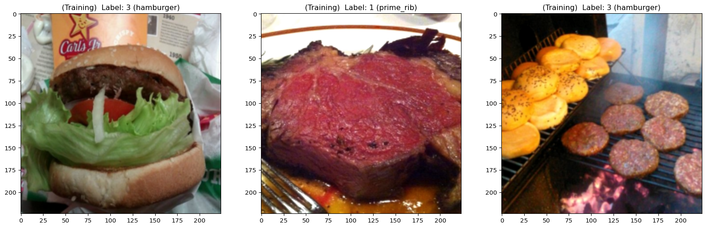
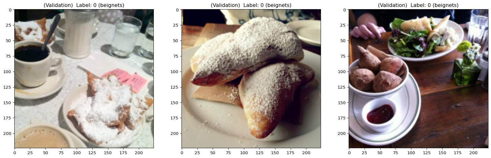

Preprocessing data
This section covers an example of the second step of a classic workflow: preprocessing the data.
Context
There are many tools and options. In this example, we use TorchVision to transform and augment images and Grain to create data loaders.
Load packages
Packages necessary for this section:
# general array manipulation
import numpy as np
# for image transformation and augmentation
from torchvision.transforms import v2 as T
# to create data loaders
import grain.python as grainData normalization and augmentation
Let’s preprocess our images to match the methods used in the vision transformer (ViT) introduced by Dosovitskiy A et al. [1] and implemented in JAX. This will be useful when we fine tune this model with the Food dataset in another section.
The preprocessing involves normalization and random augmentation (to prevent overfitting) with TorchVision:
img_size = 224
def to_np_array(pil_image):
return np.asarray(pil_image.convert("RGB"))
def normalize(image):
mean = np.array([0.5, 0.5, 0.5], dtype=np.float32)
std = np.array([0.5, 0.5, 0.5], dtype=np.float32)
image = image.astype(np.float32) / 255.0
return (image - mean) / std
tv_train_transforms = T.Compose([
T.RandomResizedCrop((img_size, img_size), scale=(0.7, 1.0)),
T.RandomHorizontalFlip(),
T.ColorJitter(0.2, 0.2, 0.2),
T.Lambda(to_np_array),
T.Lambda(normalize),
])
tv_test_transforms = T.Compose([
T.Resize((img_size, img_size)),
T.Lambda(to_np_array),
T.Lambda(normalize),
])
def get_transform(fn):
def wrapper(batch):
batch["image"] = [
fn(pil_image) for pil_image in batch["image"]
]
batch["label"] = [
labels_mapping[label] for label in batch["label"]
]
return batch
return wrapper
train_transforms = get_transform(tv_train_transforms)
val_transforms = get_transform(tv_test_transforms)
train_dataset = train_dataset.with_transform(train_transforms)
val_dataset = val_dataset.with_transform(val_transforms)Data loaders
We use Grain to create efficient data loaders:
seed = 12
train_batch_size = 32
val_batch_size = 2 * train_batch_size
train_sampler = grain.IndexSampler(
len(train_dataset),
shuffle=True,
seed=seed,
shard_options=grain.NoSharding(),
num_epochs=1,
)
val_sampler = grain.IndexSampler(
len(val_dataset),
shuffle=False,
seed=seed,
shard_options=grain.NoSharding(),
num_epochs=1,
)
train_loader = grain.DataLoader(
data_source=train_dataset,
sampler=train_sampler,
worker_count=4,
worker_buffer_size=2,
operations=[
grain.Batch(train_batch_size, drop_remainder=True),
]
)
val_loader = grain.DataLoader(
data_source=val_dataset,
sampler=val_sampler,
worker_count=4,
worker_buffer_size=2,
operations=[
grain.Batch(val_batch_size),
]
)Inspect batches
train_batch = next(iter(train_loader))
val_batch = next(iter(val_loader))
print(
"Training batch info:",
train_batch["image"].shape,
train_batch["image"].dtype,
train_batch["label"].shape,
train_batch["label"].dtype
)
print(
"Validation batch info:",
val_batch["image"].shape,
val_batch["image"].dtype,
val_batch["label"].shape,
val_batch["label"].dtype
)Training batch info: (32, 224, 224, 3) float32 (32,) int64
Validation batch info: (64, 224, 224, 3) float32 (64,) int64Display the first three training and validation items:
display_datapoints(
*[(train_batch["image"][i], train_batch["label"][i]) for i in range(3)],
tag="(Training) ",
names_map={
k: train_dataset.features["label"].names[v]
for k, v in inv_labels_mapping.items()
}
)
display_datapoints(
*[(val_batch["image"][i], val_batch["label"][i]) for i in range(3)],
tag="(Validation) ",
names_map={
k: val_dataset.features["label"].names[v]
for k, v in inv_labels_mapping.items()
}
)/tmp/ipykernel_57435/1098619187.py:34: DeprecationWarning: __array_wrap__ must accept context and return_scalar arguments (positionally) in the future. (Deprecated NumPy 2.0)
img = ((img - img.min()) / (img.max() - img.min()) * 255.0).astype(np.uint8)

References
1.
Dosovitskiy A, Beyer L, Kolesnikov A, et al (2021) An image is worth 16x16 words: Transformers for image recognition at scale